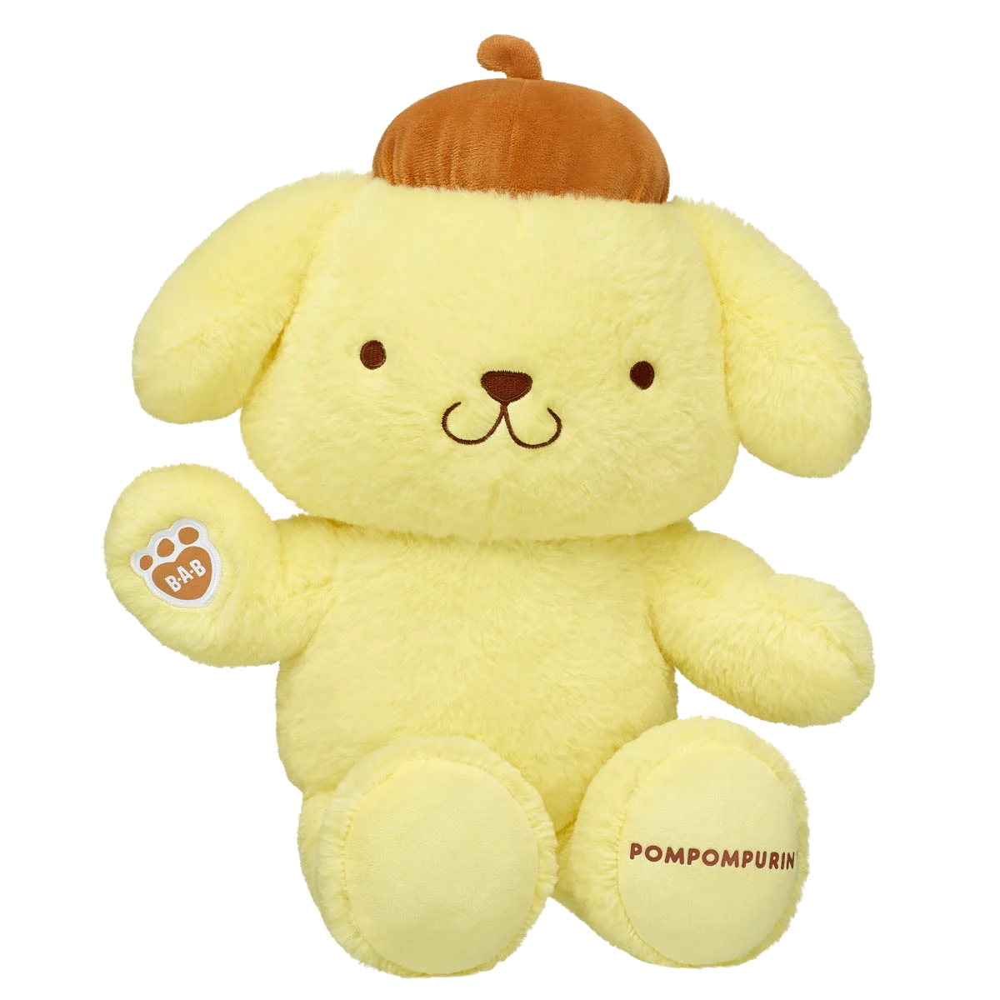

1
Classic Pompompurin
Release Date: November 8th 2023

This stuffed animal represents the iconic Sanrio character Pompompurin.He is 17 inches tall.
Pompompurin, Kuromi and My Melody each got their own build a bear (BAB) during this drop. Each of the releases shown come with clothing but I personally don't buy the clothes since the material is uncomfortable to cuddle with.
Original Pompompurin deserves number 1 on this list because, this is the first Pompompurin BAB to release. I've had him since his debut and he has been well loved through the years. Nothing can beat the original.
Liam Says
2
Zombie Pompompurin
Release Date: August 6th, 2024

The second varient of Pompompurin to be released. He has stitch marks across him and majority of his body is a light green color to represent him being zombified. His stitch color is a dark green.
Two other BABs came out with Zombie Pompompurin, Candy Corn Cinnamoroll and Spooky Bat Kuromi.
Zombie Pompompurin is 2nd because the overall concept is very cute- the soft color of green, yellow and the orange hat on top is a very good color scheme. The darker green stitches and some "stuffing" coming out really puts the cherry on top.
Liam Says
3
Banana Split Sundae Pompompurin
Release Date: May 14 2026
Exclusively in Build-A-Bear x Hello Kitty and Friends specialty workshop locations

This exclusive Pompompurin can only be bought at select locations. His appearance has the soft yellow like his original bear, waffle cone pattern paw pads, and an ice cream sundae beret hat with a cherry on top.
He is part of the Icecream Shop Collection which includes Ice Cream Sprinkles Hello Kitty, Strawberry Ice Cream Pochacco, Mint Chocolate Chip Chococat and Bubblegum Ice Cream Cinnamoroll.
- Los Angeles - Visit us at Westfield Century City
- New York - Visit us at American Dream
- Minneapolis - Visit us at Mall of America
I unfortunately do not own this varient of Pompompurin but I feel he deserves 3rd because of his sundae themed "baret." Sometimes simple changes can make the most impact. I also put him higher up due to the fact I don't have him..
Liam Says
4
Pumpkin Pompompurin
Release Date: August 7 2025

Bright orange fur and a jack-o'-latern baret replacing his original brown hat.
Pumpkin Pompompurin is added to the already made Halloween collection from the previous year. He was released alongside Skeleton Hello Kitty, Monster Cinnamoroll and Witch Kuromi
Pumpkin Pompompurin is 4th place. Its a simple design they made the Original Pompompurin orange with a little jack-o'-latern baret. Its cute and simple.
Liam Says
5
Sherpa Pompompurin
Release Date: September 2026
Australia Exclusive

Sherpa/cloud fabric version of original Pompompurin.
Australia Exclusive, not yet in U.S. He is part of the Cuddly Cloud collection who also features Hello Kitty, Kuromi and Cinnamoroll
I don't have access to getting Sherpa Pompompurin unless I want to spend $50 on shipping. I love the original pompompurin and this is him just softer. That is why he is placed 5th.
Liam Says
6
Donut Pompompurin
Release Date: May 22nd 2025
ONLINE EXCLUSIVE

This version of Pompompurin is fairly similar to the orignal. It has added pastel sprinkles shown in his ears. His baret is pink with "icing" and sprinkles. The stitch color used is also pastel blue rather than the classic brown in the original.
This collection is called Sweet Shop, it also features Cotton Candy Cinnamonroll, Cupcake Kuromi and Chocolate Chip Pochacco.
Donut Pompompurin gets 6th place due to the comparison with Sundae Pompompurin. His sprinkles are cute and pastel and his baret has frosting but it just reminds me of Sundae Pompompurin whom I dont have.If they had done more with his baret he would higher rating.. maybe a donut on his head instead of a beret??
Liam Says
7
Rainbow Dreams Pompompurin
Release Date: February 17 2026
ONLINE EXCLUSIVE

His fur is a soft tie-dye style with pastel colors instead of solid yellow. He has both a light blue beret and stitching.
Came out as a part of Easter/Rainbow Dreams collection featuring Rainbow Dreams Cinnamonroll and Dreamy Pastels Hello Kitty.
Rainbow Dreams gets 7th due to lack of creativity. Just felt like they splashed pastel colors on him and called it a day. They couldve made his baret cloud themed or instead of tiedye do proper rainbows on him.
Liam Says
8
Giant Pompompurin
Release Date: October 30 2024

Giant Pompompurin is 3 feet tall and 1 foot wide, he is based on the original design of Pompompurin.
He was released on his own.
Giant Pompompurin is 8th place just because of how big it is. He sits in the corner of my bed taking up space. He is nice to cuddle though, that's why he isnt last.
Liam Says
9
Mini Pompompurin
Release Date: July 10 2025

Released as a part of the Sanrio Mini Beans collection. Mini Pompompurin comes prestuffed with tiny beans, unlike normal sized bears which is stuffed with poly-fil. He is 9 inches tall.
In last place is Mini Pompompurin, hes small not enough to cuddle. He sits in the back of my car.
Liam Says